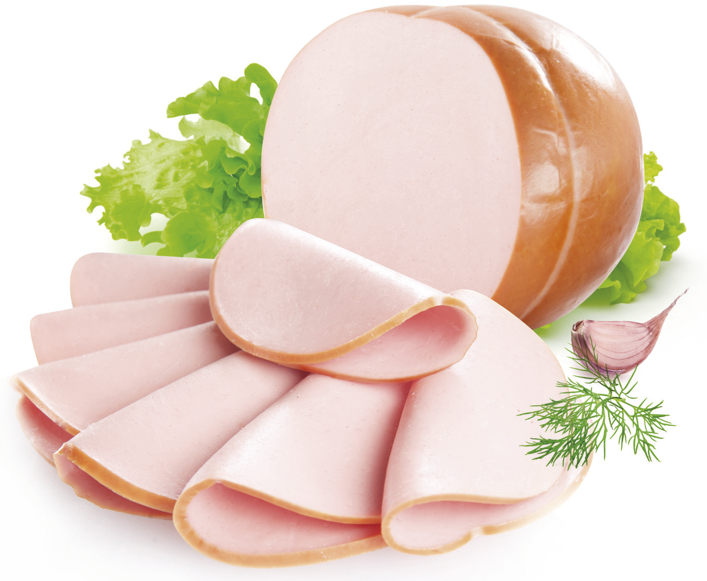

Характеристика сырья и готовой продукции
К вареным колбасам относят изделия, изготовленные из мяса, подвергнутые обжарке и варке или запеканию .Вареные колбасы являются самым массовым и распространенным видом продукта. В основном они предназначены для потребления в местах их производства, поэтому при изготовлении не ставится задача дать потребителю продукт стойкий при длительном хранении. 
В практике производства колбасных изделий могут применять двухсортную жиловку говядины и свинины - высший и объединенный (первый и второй) сорта. Объединенный сорт говяжьего мяса содержит 12 % соединительной и жировой тканей; от упитанных животных получают, как это было указано выше, еще один сорт - жирную говядину. При двухсортной жиловке свинины высший сорт получают путем отделения нежирных частей от окороков и средней части полутуши; остальное мясо - объединенный сорт, содержащий 35-50 % жировой ткани. Кроме того, поскольку вареные колбасы являются продуктом массового потребления, при их изготовлении необходимо сохранить естественное соотношение между белками, жирами, а также влагой и сухими веществами, которые обычно бывают в мясе разных видов животных.
Белки мяса как продукты питания характеризуются высокой способностью компенсировать непрерывную потерю белка организмом в результате постоянного распада тканевых белков в процессе обмена веществ. От 73 до 93% жиров составляют жировую ткань. В отличие от других тканей в ней содержится мало воды и белков, в небольших количествах - витамины, пигменты, и некоторые органические и минеральные вещества. Углеводы мяса представлены в основном гликогеном, количество которого составляет 0,6-2% . Гликоген - запасающее вещество, служит для наполнения крови глюкозой, образующейся из него под действием ферментов.
Кроме мяса всех видов скота и птицы, к основному сырью относят: субпродукты, животные и растительные жиры, яйца и яйцепродукты, кровь и продукты ее переработки, белковые препараты растительного и животного происхождения, молоко и молочные продукты, крупы, крахмал, муку, овощи и др.; к вспомогательному материалу: пищевые кислоты и посолочные ингредиенты, пряности, приправы, бактериальные и коптильные препараты, питьевую воду, колбасные оболочки.
Используют поваренную соль, нитрит натрия, перец черный или белый, орех мускатный, кардамон, кориандр, фисташковый орех, чеснок и другие специи (в зависимости от рецептуры).
Поваренная соль не только улучшает вкусовые качества колбас, но и является консервантом. Используется в количестве 2,5 %.
Нитрит натрия используют для сохранения товарной окраски колбас.
Используют соли фосфорной кислоты, которые способствуют набуханию мышечных белков, влагоудерживанию при варке, увеличению сочности и выхода вареных колбас.
При посоле также используют свекловичный или тростниковый сахар или глюкозу.